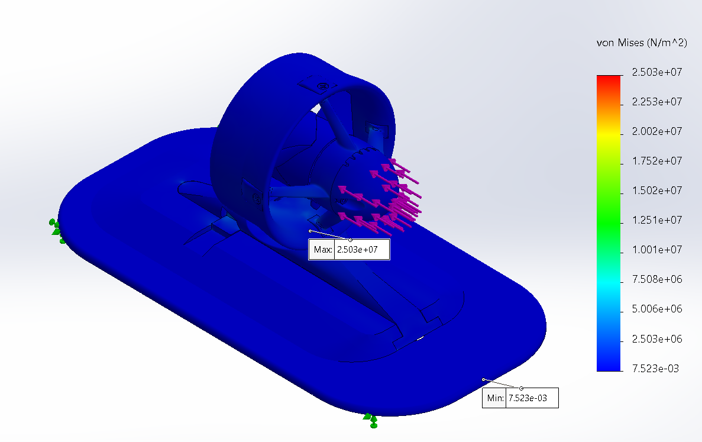
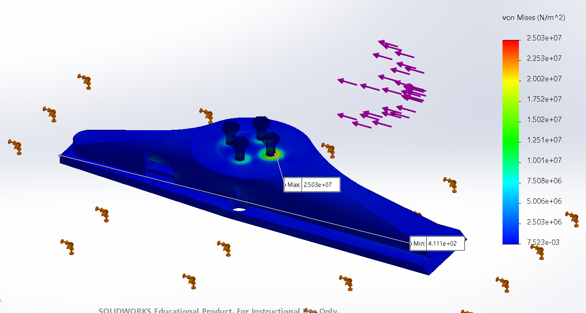
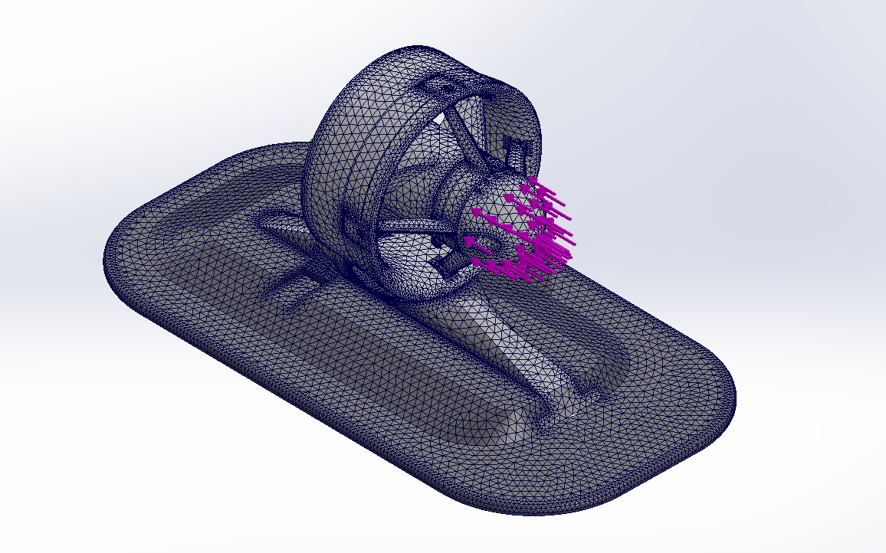

Texas Marine Robotics · Structural Analysis
Thruster Mount FEA
Finite element analysis of the custom mount that holds our Blue Robotics T200 thrusters to the hull of our autonomous surface vessel.
- Result
- Minimum factor of safety ≈ 2.4
- Load case
- 59 N thrust, T200 at 18 V
- Tools
- SolidWorks Simulation
The mount
- Three parts: a 3D-printed PLA coupler, a commercial Sea Eagle universal skeg mounting base, and a retaining clip.
- How it goes together: the thruster bolts to the coupler with four M4 screws. The coupler slides into the skeg base and is locked in place by the retaining clip.
- Why this design: thrusters can be installed and removed quickly while keeping a secure mechanical connection to the hull.
The analysis
- Setup: modeled the full assembly in SolidWorks Simulation with a fixed connection at the hull and a 59 N thrust load, matching the T200’s output at 18 V.
- Outputs: von Mises stress, displacement, and factor of safety, used to find likely failure points.
What I found
- Minimum factor of safety of about 2.4 across the assembly under full thrust.
- Stress concentrates at the thruster screws. Peak von Mises stress, about 25 MPa, occurs around the M4 screws that join the thruster to the coupler.
- Deflection is small. Maximum displacement is about 0.7 mm, at the top of the thruster duct.
- Why it matters: the results confirmed the mount’s structural reliability and pointed to the screw region as the place to focus future design improvements.



